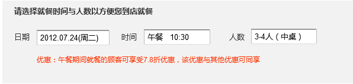
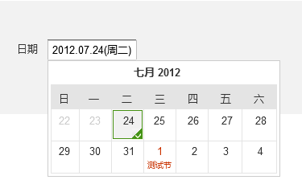
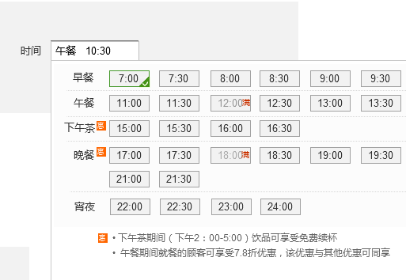

Your browser doesn't support the features required by impress.js, so you are presented with a simplified version of this presentation.
For the best experience please use the latest Chrome, Safari or Firefox browser.
哗啦啦商家订餐促销前端需求分析
平台提供5个就餐时段（早餐，午餐，下午茶，晚餐，夜宵），商家可以通过admin，商户系统动态设置自己餐厅提供的时段，涉及到WWW站点的修改主要包括：
可能还有订单确认页面的相关信息展示，未来可能涉及订单评价，订单分享中带入促销信息等宣传信息的需求
店铺首页的时间选择 
user click dateSelector;
show weekly calendar;
if (today is not Sunday) {
show 3 weeks date cells;
disabled other date cells except future 14 days;
} else {
show 2 weeks date cells;
}
if (user click the date of next month) {
change weekly calendar title to next month;
}
then callback order_SearchOrderTimeTableSurplus service;
update the data of time selector;
update the time info in order;
店铺首页的时间选择
时间是分段的，最多显示5个时间段，并且每段时间的时间点间隔也是动态的，推荐采用纵向tab形式，根据餐厅设置营业时间分段展示，或者采用二级下拉框展示。交互逻辑如下
user click time selector;
show time selector;
disable all time cells before current time;
user select one period;
show the period time cells;
show the promotion rules in the current period
if (tables are full in current period) {
disable all of time cells in this period;
show the full incon in this periods;
}
then callback order_SearchOrderTimeTableSurplus service;
update the data of time selector
update the time info in order
是否也能动态设置，比如有些餐厅桌台可能没有大桌（自己YY不再考虑范围）,交互逻辑如下：
user click table selector; show table selector list; user select table; callback order_SearchOrderTimeTableSurplus service; update table info in order;
优惠信息必须按照一定语法展示，否则从后台获取的优惠信息很难展示统一。例如：
下午茶时段消费，满50元，减免5元，送小礼品
下午茶时段消费，满50元，打九折，送小礼品
下午茶时段消费，满50元，送小礼品
[timeName]+startTime + '~' + endTime + '满' + payVoucherRate + returnVoucher
根据设计图确定
Use a spacebar or arrow keys to navigate